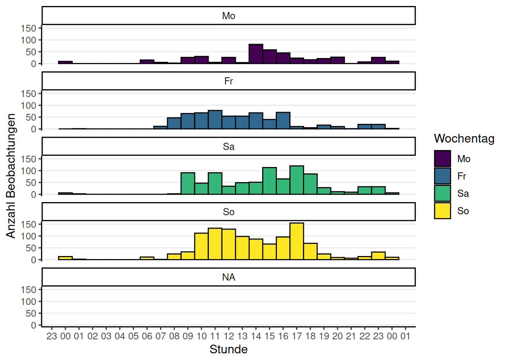

City Nature Challenge 2025: Vorarlberg
https://observation.org/bioblitz/17262/vorarlberg-cnc-2025/
Allgemeine Information
Insgesamt wurden 3078 Beobachtungen von 151 Beobachterinnen und Beobachtern hochgeladen. Dies ergibt einen Mittelwert von 20.4 und einen Median von 5 Beobachtungen pro Person. Auf Artebene (Spezies-Ebene) wurden 939 unterschiedliche Arten beobachtet.

Beobachtungskarte
Fun Facts
Der/Die User/in (auch bekannt als Birder) 0 hat mit 0 Vogelbeobachtungen die meisten Beiträge in dieser Kategorie hochgeladen. Besonders häufig, nämlich 7 Mal, hat der/die User/in Rosmarie Mäser die Art Parmelia sulcata beobachtet. Das Taxon mit dem längsten wissenschaftlichen Namen ist Taraxacum officinale s.l. (incl. all sect.) mit 43 Zeichen. Als Wanderer/in hat miso die größte Distanz von 45.9 km zwischen zwei Beobachtungen zurückgelegt. In der Stunde 11 am 2025-04-27 wurden die meisten Beobachtungen gemacht, nämlich 174 Mal.
Top Beobachter/innen
Diese Liste zeigt die Beobachter/innen, geordnet nach der Gesamtzahl ihrer Beobachtungen (inklusive Mehrfachbeobachtungen derselben Art).
Top Bestimmer/Innen (iNaturalist)
Die hochgeladenen Beobachtungen gewinnen erst durch die wertvolle Arbeit der Bestimmer/innen an wissenschaftlicher Bedeutung. Ein großes Dankeschön an alle, die durch ihre Bestimmungen iNaturalist zu dem machen, was es heute ist!
[1] "Noch keine Beobachtungen"Top Beobachter/innen mit den meisten unterschiedlichen Arten
Gezählt werden nur Beobachtungen, die mindestens auf Artebene bestimmt und als “Research Grade” (iNaturalist) eingestuft oder positiv validiert (Observation.org) wurden.
Top Taxa (Spezies-Ebene)
Diese Liste enthält die am häufigsten beobachteten und bereits auf Artebene bestimmten Taxa (“Research Grade” oder positiv validiert).
Unique Taxa mit Research-Grade
Einzigartige Funde, die nur von einer einzigen Person während der Challenge beobachtet und hochgeladen wurden, sind besonders erfreulich.
Raritäten (observation.org)
Observation.org verwendet eine eigene Einstufung für die Seltenheit von Beobachtungen, die sich von der iNaturalist-Einteilung unterscheidet. Die Verteilung dieser Raritätsstufen ist unten dargestellt.

Beobachtungen mit Rarität “selten” (observation.org)
Die folgende Liste zeigt Beobachtungen, die auf observation.org als “selten” eingestuft wurden.
Beobachtungs Qualität (iNaturalist)
iNaturalist teilt die Beobachtungsqualität in drei Stufen ein: - Zwanglos (casual): Beobachtungen, bei denen Datum, Ort oder ein Belegfoto/-ton fehlt. - Benötigt Bestimmung (needs_id): Beobachtungen, bei denen noch keine übereinstimmende Bestimmung durch mindestens zwei Personen vorliegt. - Forschungsqualität (research): Bestätigte Beobachtungen auf Artebene.
[1] "Noch keine Beobachtungen"Beobachtungen Phylum (iNaturalist)
[1] "Noch keine Beobachtungen"Insecta - Ordnungen (iNaturalist)
[1] "Noch keine Beobachtungen"Beobachtungen mit Konflikt Bestimmungen (iNaturalist)
Diese Tabelle listet Beobachtungen auf, bei denen Uneinigkeit über das bestimmte Taxon zwischen den Usern besteht.
[1] "Noch keine Beobachtungen"Verifizierung Status (observation.org)
Observation.org klassifiziert Beobachtungen nach ihrem Validierungsstatus.

Beobachtungen die nicht Verizifiert werden können (observation.org)
Hier werden Beobachtungen von observation.org angezeigt, die nicht verifiziert werden konnten oder deren Bestimmung nicht genehmigt wurde.